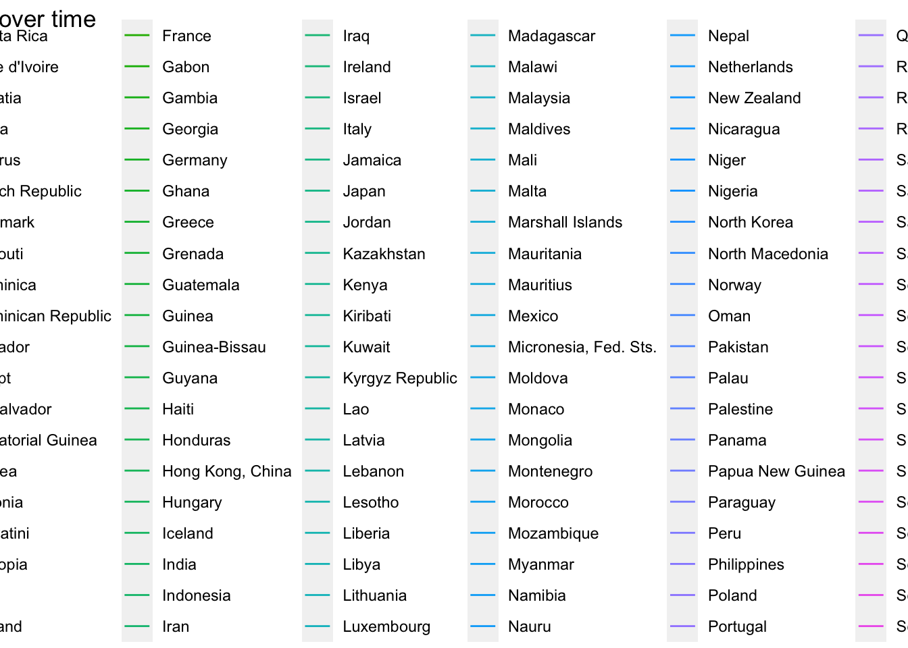
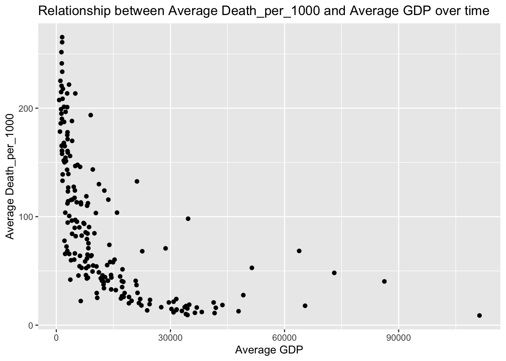

library(tidyverse)
library(here)Project_Proposal
Project Proposal Data
Data Set Descriptions
Both of our data sets have been sourced from the GapMinder website.
For our first data set we chose one that focuses on the GDP ( Gross Domestic Product) per capita of almost 200 countries across the world. GDP per capita takes the whole economic output of a country, and divides it by the country’s population to understand the economic output per person in a country. Lower GDPs per capita means the economy of the given country is poor. The data we have chose highlights the change in GDP per capita from 1950 to 2025 throughout the given countries.
Our second data is centered around Child Mortality rates in countries across the world. The rate of child mortality is measured as the amount of deaths to children 5 years or younger for every 1,000 children born in a country. This data set includes almost 200 countries from around the world and gives us their child mortality rates from 1950 - 2025.
<<<<<<< HEAD
=======
>>>>>>> 32b1478ddbf8e6ae47a6c7b549732457a0209796
<<<<<<< HEAD
=======
>>>>>>> 32b1478ddbf8e6ae47a6c7b549732457a0209796
gdp_data <- read_csv(here::here("gdp_pcap.csv"))Code
gdp_data <- read_csv(here::here("gdp_pcap.csv"))Rows: 195 Columns: 302
── Column specification ────────────────────────────────────────────────────────
Delimiter: ","
chr (216): country, 1881, 1883, 1885, 1887, 1888, 1889, 1890, 1891, 1892, 18...
dbl (86): 1800, 1801, 1802, 1803, 1804, 1805, 1806, 1807, 1808, 1809, 1810,...
ℹ Use `spec()` to retrieve the full column specification for this data.
ℹ Specify the column types or set `show_col_types = FALSE` to quiet this message.child_mortality_data <- read_csv(here::here("child_mortality_0_5_year_olds_dying_per_1000_born.csv"))Code
child_mortality_data <- read_csv(here::here("child_mortality_0_5_year_olds_dying_per_1000_born.csv"))Rows: 197 Columns: 302
── Column specification ────────────────────────────────────────────────────────
Delimiter: ","
chr (1): country
dbl (301): 1800, 1801, 1802, 1803, 1804, 1805, 1806, 1807, 1808, 1809, 1810,...
ℹ Use `spec()` to retrieve the full column specification for this data.
ℹ Specify the column types or set `show_col_types = FALSE` to quiet this message.
<<<<<<< HEAD
child_mortality_long <- child_mortality_data |>
select(country, `1950`:`2025`) |>
pivot_longer(cols = `1950`:`2025`, names_to = "Year", values_to = "Death_per_1000") |>
filter(!is.na(Death_per_1000)) gdp_data_long <- gdp_data |>
select(country, `1950`:`2025`) |>
pivot_longer(cols = `1950`:`2025`, names_to = "Year", values_to = "GDP") |>
filter(!is.na(GDP)) |>
mutate(GDP = if_else(str_detect(GDP, "k"), as.numeric(str_replace(GDP, "k", "")) * 1000, as.numeric(GDP)))Code
child_mortality_long <- child_mortality_data |>
select(country, `1950`:`2025`) |>
pivot_longer(cols = `1950`:`2025`, names_to = "Year", values_to = "Death_per_1000") |>
filter(!is.na(Death_per_1000)) Code
gdp_data_long <- gdp_data |>
select(country, `1950`:`2025`) |>
pivot_longer(cols = `1950`:`2025`, names_to = "Year", values_to = "GDP") |>
filter(!is.na(GDP)) |>
mutate(GDP = if_else(str_detect(GDP, "k"), as.numeric(str_replace(GDP, "k", "")) * 1000, as.numeric(GDP)))Warning: There was 1 warning in `mutate()`.
ℹ In argument: `GDP = if_else(...)`.
Caused by warning in `if_else()`:
! NAs introduced by coercionHypothesis
We are combining our two data sets, GDP per capita and Child Mortality Rates, to examine what type of relationship, if any, there is between the two variables. We are testing how GDP per capita has affected Child Mortality Rates in countries across the world from 1950 to 2025, and if we can find any association between the two. Our hypothesis is that a lower GDP per Capita will be positively associated with a higher Child Mortality Rate. We believe this to be true because the lower economic standing a country has, the harsher living conditions there tends to be meaning an increased possibility of child mortality.
<<<<<<< HEAD
=======
>>>>>>> 32b1478ddbf8e6ae47a6c7b549732457a0209796
Total_data <- child_mortality_long |>
inner_join(gdp_data_long, join_by("country", "Year")) |>
rename("Country" = country)Code
Total_data <- child_mortality_long |>
inner_join(gdp_data_long, join_by("country", "Year")) |>
rename("Country" = country)2 Linear Regression
<<<<<<< HEAD
=======
>>>>>>> 32b1478ddbf8e6ae47a6c7b549732457a0209796
avg_Total_data <- Total_data|>
group_by(Country)|>
summarize(avg_GDP = mean(GDP), avg_Death_per_1000 = mean(Death_per_1000))Code
avg_Total_data <- Total_data|>
group_by(Country)|>
summarize(avg_GDP = mean(GDP), avg_Death_per_1000 = mean(Death_per_1000))2.1 Data Visualization
<<<<<<< HEAD
=======
>>>>>>> 32b1478ddbf8e6ae47a6c7b549732457a0209796
<<<<<<< HEAD
ggplot(Total_data, aes(x = GDP, y = Death_per_1000, color = Country)) +
geom_line() +
labs(x = "GDP", y = "Death_per_1000", title = "Relationship between Death_per_1000 and GDP over time")Code
ggplot(Total_data, aes(x = GDP, y = Death_per_1000, color = Country)) +
geom_line() +
labs(x = "GDP", y = "Death_per_1000", title = "Relationship between Death_per_1000 and GDP over time")
ggplot(avg_Total_data, aes(x = avg_GDP, y = avg_Death_per_1000)) +
geom_point() +
labs(x = "Average GDP", y = "Average Death_per_1000", title = "Relationship between Average Death_per_1000 and Average GDP over time")Code
ggplot(avg_Total_data, aes(x = avg_GDP, y = avg_Death_per_1000)) +
geom_point() +
labs(x = "Average GDP", y = "Average Death_per_1000", title = "Relationship between Average Death_per_1000 and Average GDP over time")